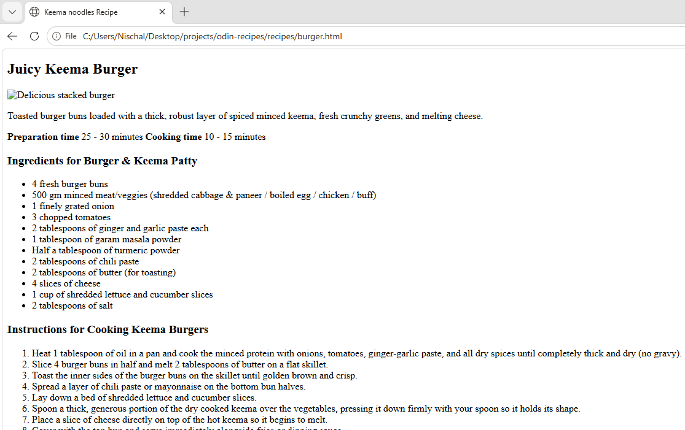

Hi, I'm Nischal Neupane
A self-taught Full Stack Developer from Kathmandu, Nepal. I build scalable web applications using Django, React, and PostgreSQL.
View My Work
A self-taught Full Stack Developer from Kathmandu, Nepal. I build scalable web applications using Django, React, and PostgreSQL.
View My Work

A full- featured e-commerce platform built with Django Rest Framework and React.Includes product listing, cart, orders, JWT authentication, and PostgreSQL database
View on GitHub
A hospital management system built with Django and React. Manages patients, doctors, appointments, and medical records with role-based access control.
View on github
A menu card made from html only. That shows the start of the transition from Django based full stack development to Javascript based Full stack Development.
View view on GithubI'm an 18-year-old self-taught developer from Kathmandu, Nepal. I started learning web development in 8th grade and have been building real projects ever since, earning income through freelance work while still in high school.
I'm currently starting my BSc in Computer Science at Tribhuvan University while continuing to build my skills in full stack development. My goal is to land a remote junior developer role with international teams.